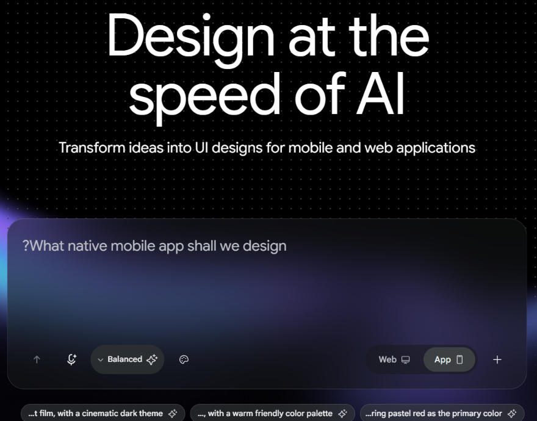
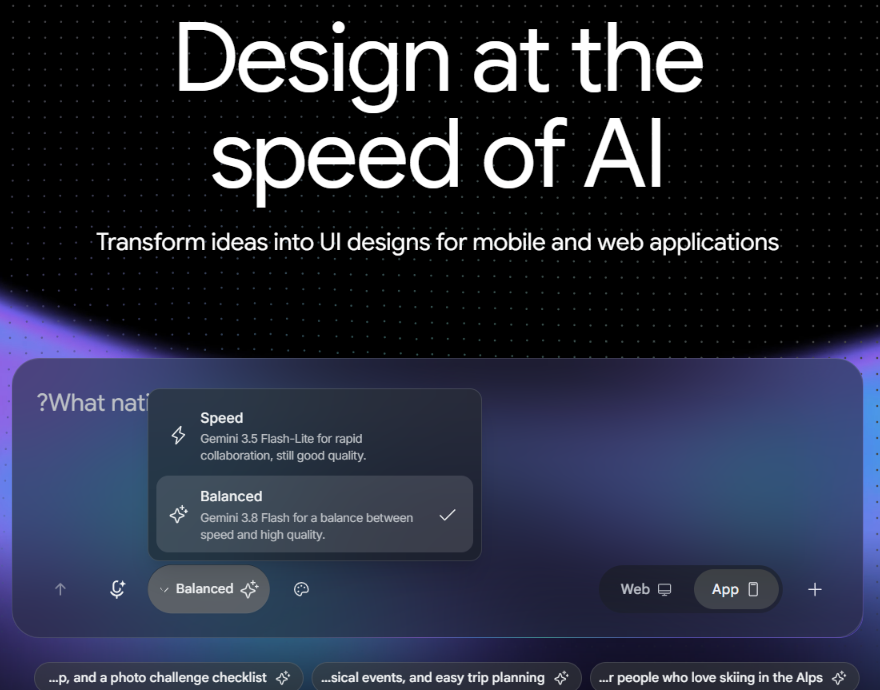

Stitch
מתארים במילים, מקבלים אתר או אפליקציה
הכלי של Google שמעצב מסכים מתיאור, משפר אותם בשיחה ומוציא אותם החוצה לקוד, ל-Figma ולפרסום.
מרעיון למסך מעוצב, בלי מעצב
צריכים דף לאירוע, אתר לפרויקט או מסך לאפליקציה, ואין מעצב או זמן? מתחילים כאן.
מתארים, ומקבלים מסכים
כותבים מה רוצים, ו-Stitch בונה עיצוב מלא של אתר או של אפליקציה: צבעים, גופנים, כפתורים ופריסה.
משפרים בשיחה
מבקשים שינויים בצ'אט, בהקלדה או בקול, עד שהתוצאה נראית כמו שרציתם.
מוציאים החוצה
מייצאים ל-Figma, מעתיקים קוד, או מפרסמים כאתר בקישור.
Stitch הוא מוצר ניסיוני של Google Labs, והשימוש בו חינמי. ניסיוני אומר שדברים משתנים בו מהר, אז שווה להציץ מדי פעם במה שחדש.
איך מתחילים
שלושה צעדים, עם חשבון Google רגיל.
נכנסים ל-stitch.withgoogle.com
ולוחצים Try now. מתחברים עם אותו חשבון Google שמשמש ל-Gmail.
מאשרים את תנאי השימוש
נפתח חלון Additional Terms of Service. יש בו שתי הסכמות, לקבלת מיילים ולהשתתפות במחקרים, ויכול להיות שהן כבר מסומנות. בודקים, ואם לא רוצים, מורידים את הסימון לפני Continue.
כותבים מה רוצים לעצב
בוחרים אתר או אפליקציה, מתארים במילים, ו-Stitch בונה את המסכים.
הממשק באנגלית בלבד, והשימוש מגיל 18 ומעלה, באזור שבו Gemini זמין. לכן זה כלי לצוות. תלמידים רואים את התוצר, לא עובדים בכלי בעצמם.
איפה כותבים
כבר בדף הפתיחה יש תיבה מלאה. בדפדפן בעברית הדף מוצג מימין לשמאל.
- 1
כאן מתארים את האתר או האפליקציה
כותבים, או מדביקים פרומפט מוכן מההדרכה.
- 2
אתר או אפליקציה
Web למסך מחשב, App למסך טלפון.
- 3
בורר המצב
קובע איזה מודל של Gemini עובד. פרטים בעמוד הבא.

צילומי מסך מתוך סביבת העבודה יתווספו בהמשך.
מהיר, או מאוזן
לוחצים על Balanced ליד התיבה, ונפתחות שתי אפשרויות.
- 1
פותחים את הבורר
הכפתור מציג את המצב שנבחר כרגע.
- 2
Speed
עובד עם Gemini 3.5 Flash-Lite. תגובה מהירה, ועדיין איכות טובה. מתאים לטיוטות ולניסיונות.
- 3
Balanced
עובד עם Gemini 3.8 Flash. איזון בין מהירות לאיכות גבוהה. בדף הפתיחה זו ברירת המחדל.

2
איך עובדים עם Stitch
מהתיאור הראשון ועד אתר שאפשר לשלוח בקישור.
מה כותבים בתיאור
פרומפט הוא ההוראה שכותבים ל-AI. ככל שהוא מפורט יותר, התוצאה קרובה יותר למה שדמיינתם.
מה ולמי
דף הרשמה ליום פתוח, להורים של תלמידי ז'.
סגנון וצבעים
"נקי ומודרני, פינות מעוגלות, כחול ולבן".
עברית מימין לשמאל
כותבים במפורש Hebrew, RTL, ומבקשים גופן עברי כמו Heebo.
כמה מסכים
"מסך אחד", או "שני מסכים: רשימה ודף פרטים".
התוצאה לא קרובה למה שרציתם? מתקנים בשיחה. ואם היא רחוקה מאוד, פותחים פרויקט חדש עם תיאור מדויק יותר.
שני פרומפטים להעתקה
לוחצים "העתקה", ומדביקים בתיבה של Stitch (Ctrl+V). הממשק באנגלית, ולכן גם ההנחיה.
משפרים בשיחה, לא מתחילים מחדש
אחרי הטיוטה הראשונה ממשיכים לדבר עם Stitch, כמו עם מעצב שיושב לידכם.
מבקשים בצ'אט
"תגדיל את הכותרת", "תחליף את הצבע הראשי לירוק", "תוסיף כפתור הרשמה בראש הדף".
או אומרים בקול
פקודות קוליות: מדברים במקום להקליד. נוח כשמסבירים שינוי מורכב.
תמונה כהשראה
מצרפים צילום מסך של אתר שאהבתם, ו-Stitch מעצב בהשראתו.
בתצוגה המקדימה בודקים איך העיצוב נראה במחשב ובטלפון, לפני שמראים למישהו.
מה חדש מאז מרץ 2026
בעדכון של 18.3.2026 נוספו ארבעה דברים שמשנים את העבודה.
קנבס אינסופי
כל המסכים פרושים על משטח אחד גדול. רואים את כל הפרויקט בבת אחת.
עד 5 מסכים יחד
מבקשים כמה מסכים בבקשה אחת, למשל דף בית, הרשמה ואישור.
פקודות קוליות
אומרים מה לשנות, ו-Stitch מבצע.
כפתור Play
מפעיל את המסכים כאב-טיפוס שאפשר ללחוץ בו, כדי להרגיש איך האתר או האפליקציה יעבדו.
מראה אחד לכל המסכים
Stitch בונה לכל פרויקט מערכת עיצוב: הכללים הקבועים של הצבעים, הגופנים והכפתורים.
נוצרת מערכת עיצוב
פלטת צבעים, גופן לכותרות וגופן לטקסט, וסגנון אחיד לכפתורים.
היא נשמרת בקובץ DESIGN.md
מסמך קצר שמתאר במילים איך הכל צריך להיראות.
כל מסך חדש נראה אותו דבר
גם מסכים שתוסיפו אחר כך, וגם בכלים אחרים שמקבלים את הקובץ.
במילים פשוטות: DESIGN.md הוא "ערכת המותג" של הפרויקט. בזכותו דף הבית, דף ההרשמה ודף התודה נראים כמו אתר אחד, ולא כמו שלושה אתרים שונים.
מוציאים את העיצוב החוצה
העיצוב לא נשאר תקוע ב-Stitch. והייצוא ל-Google IDX מהמדריכים הישנים כבר לא קיים.
AI Studio ו-Antigravity
ממשיכים בכלים של Google, עד אתר או אפליקציה שעובדים.
פרסום ב-Netlify
מפרסמים את העיצוב כאתר חי, עם קישור לשליחה.
Figma
מעבירים למעצב או לספק שעובד ב-Figma, והוא ממשיך משם.
ZIP והעתקת קוד
מורידים את כל הקבצים למחשב, או מעתיקים את הקוד בלחיצה.
DESIGN.md
קובץ המראה של הפרויקט, כדי שגם כלים אחרים ישמרו על אותו עיצוב.
חיבור MCP
דרך שבה כלי AI אחרים מתחברים ל-Stitch ועובדים עם העיצובים ישירות.
לא רואים את כפתור הייצוא ל-Figma? יש משתמשים שמדווחים שהוא מופיע רק בחלק מהמצבים. כדאי לנסות במצב Speed.
הצ'אט כותב, Stitch מעצב
את התוכן מכינים קודם, בצ'אט שאתם כבר מכירים: ChatGPT, Claude או Gemini.
שלב 1: תוכן אמיתי בעברית
מבקשים מהצ'אט את הטקסטים לדף: כותרת, שלושה יתרונות, שאלות נפוצות. בודקים ומתקנים, כי זה התוכן שלכם.
שלב 2: עיצוב ב-Stitch
מדביקים את התוכן בתיאור, ומוסיפים סגנון, צבעים ו-RTL. כך הדף נבנה סביב תוכן אמיתי ולא סביב טקסט מילוי.
אפשר גם לבקש מהצ'אט לכתוב את הפרומפט עצמו באנגלית. ומי שעובד עם כלי AI שתומך ב-MCP יכול לחבר אותו ל-Stitch ישירות.
עברית מימין לשמאל
הממשק באנגלית, אבל התוצר יכול להיות בעברית. שלושה דברים עושים את ההבדל.
מבקשים במפורש
כותבים בתיאור in Hebrew (RTL). בלי זה מקבלים לרוב דף משמאל לימין.
מבקשים גופן עברי
למשל Heebo או Rubik. אחרת האותיות עלולות לצאת בגופן שלא מתאים לעברית.
בודקים בעיניים
עוברים על כל מסך, במחשב ובטלפון: כיוון הטקסט, סדר הכפתורים, תפריטים ומספרים.
אין התחייבות שהכיוון ייצא נכון בכל פעם. לכן בודקים בעיניים, ומבקשים תיקון בשיחה כשמשהו הפוך.
3
מתי כן, ומתי לא
בלי הבטחות: מה מעולה, מה מוגבל, ומה עושים עם זה.
מה מעולה, ומה כדאי לדעת מראש
מתי כן
- מתכננים אתר או אפליקציה ורוצים לראות איך זה ייראה
- צריך הדמיה להציג להנהלה או לספק לפני שמזמינים
- דף הרשמה, דף אירוע או דף פרויקט, מהר
- רוצים להעביר עיצוב למעצב ב-Figma
- רוצים לנסות בלי לשלם
מתי לא, ומה עושים
- הממשק באנגלית בלבדהפרומפטים המוכנים בהדרכה עוזרים
- גיל 18 ומעלההצוות עובד, התלמידים רואים תוצר
- עברית מימין לשמאל לא מובטחתמבקשים במפורש, ובודקים בעיניים
- פוסטר, פלייר או מצגתלזה יש כלים מתאימים יותר, כמו Canva
כמה זה עולה
לא עולה כלום. אבל כדאי להבין מה זה אומר.
Stitch
חינם, כמוצר ניסיוני של Google Labs. לא צריך כרטיס אשראי, רק חשבון Google.
קרדיטים יומיים
השימוש נמדד בקרדיטים יומיים שמתאפסים כל יום. Google לא פרסמה כמה, וזה עשוי להשתנות. נגמרו? ממשיכים מחר.
מי יכול להשתמש
מגיל 18, עם חשבון Google, באזור שבו Gemini זמין.
מוצר ניסיוני יכול לשנות תנאים, ואפילו להיסגר. שומרים עותק של כל מה שחשוב לכם (ZIP, Figma או קוד). המצב העדכני נמצא ב-stitch.withgoogle.com.
Stitch או Canva?
לא מתחרים, משלימים. השאלה היא מה אתם מכינים.
Google Stitch
- אתרים ואפליקציות: מסכים, כפתורים ומעברים
- מתחיל מתיאור במילים, לא מתבנית
- מוציא קוד, אב-טיפוס ואתר חי
- ממשק באנגלית, מגיל 18
Canva
- פוסטרים, מצגות, פליירים ותעודות
- מאגר ענק של תבניות מוכנות
- מוציא תמונה, PDF או סרטון
- ממשק בעברית
רגע, זה בדיוק אני
שלושה מצבים שכולנו מכירים, ואיך Stitch עוזר בהם.
הכיתה סיימה פרויקט
רוצים להציג אותו להורים בדף אחד מסודר. מתארים את הפרויקט, מקבלים דף מעוצב, ומפרסמים בקישור.
ההנהלה רוצה פורטל להורים
לפני שפונים לספק, מעצבים הדמיה של המסכים. מציגים אותה בישיבה, והספק מקבל בדיוק מה רוצים.
יום פתוח בעוד שבועיים
צריך דף הרשמה שנראה טוב גם בטלפון. מדביקים את הפרומפט מעמוד 8 ומתאימים את הפרטים.
למי זה מתאים
לכל מי שמתכנן אתר או אפליקציה, גם בלי שום רקע בעיצוב.
הוראה
דף לפרויקט כיתתי, אתר קטן לתערוכת סוף שנה, או הדמיה של אפליקציה שהתלמידים תכננו על הנייר.
ניהול
הדמיה של פורטל הורים או של אתר בית הספר לפני שמזמינים מספק. כולם רואים אותו דבר לפני שמשלמים.
מזכירות וצוות
דף הרשמה ליום פתוח, לאירוע או לסדנה, שעובד טוב גם בטלפון.
שימוש אישי
אתר תדמית לעסק קטן, דף אירוע משפחתי, או רעיון לאפליקציה שתמיד רציתם לראות.
שישה טיפים שלא כתובים במדריכים
תוכן קודם
מכינים טקסטים אמיתיים, ורק אז מעצבים. אחרת מקבלים דף יפה עם טקסט מילוי.
כותבים Hebrew, RTL
בכל פרומפט, גם כשנראה שזה ברור מאליו.
בוחרים Web או App מראש
דף לדפדפן במחשב, או מסכים של אפליקציה בטלפון.
בודקים את הסימונים
בחלון התנאים. לא רוצים מיילים ומחקרים? מורידים את הסימון.
לוחצים Play
לפני שמציגים, עוברים על האב-טיפוס כמו משתמש.
שומרים עותק
מייצאים ZIP או ל-Figma. מוצר ניסיוני יכול להשתנות.
שאלות שכולם שואלים
לוחצים על שאלה כדי לפתוח את התשובה.
זה באמת חינמי?
כן. Stitch הוא מוצר של Google Labs. השימוש נמדד בקרדיטים יומיים שמתאפסים כל יום. Google לא פרסמה כמה, ואם נגמרו, ממשיכים מחר.
זה עובד בעברית?
הממשק באנגלית בלבד. התוצר יכול להיות בעברית אם מבקשים Hebrew, RTL וגופן עברי. ותמיד בודקים בעיניים.
תלמידים יכולים להשתמש?
השימוש מגיל 18. בכיתה המורה עובדת בכלי, והתלמידים מתכננים איתה על הלוח, נותנים משוב ורואים את התוצר.
יוצא מזה אתר אמיתי?
אפשר לפרסם כאתר חי דרך Netlify, או להמשיך לבנות ב-Google AI Studio וב-Antigravity. לאתר שאנשים משתמשים בו לאורך זמן כדאי מישהו שבודק את הקוד.
מה ההבדל בין Web ל-App?
Web מעצב דף לדפדפן במחשב. App מעצב מסכים של אפליקציה בטלפון.
אפשר להעביר את זה למעצב או לספק?
כן. מייצאים ל-Figma, מורידים ZIP, או מפרסמים ב-Netlify ושולחים קישור.
בדקו את עצמכם
שלוש שאלות. נסו לענות בקול לפני שפותחים.
מה כותבים בפרומפט כדי לקבל דף בעברית?
מבקשים במפורש Hebrew, RTL וגופן עברי כמו Heebo, ואחר כך בודקים בעיניים כל מסך.
מה עושה הקובץ DESIGN.md?
שומר את המראה של הפרויקט, צבעים, גופנים וכפתורים, כך שכל המסכים, וגם כלים אחרים, נראים אחיד.
למה כדאי להכין את התוכן בצ'אט AI לפני Stitch?
כי כך הדף נבנה סביב טקסט אמיתי בעברית, ולא סביב טקסט מילוי שצריך לשכתב אחר כך.
4
עכשיו אתם
לא צופים, עושים. פותחים מחשב.
דף מעוצב ראשון, ב-5 דקות
נכנסים ל-Stitch
stitch.withgoogle.com, לוחצים Try now ומתחברים עם Google.
בוחרים Web
ומשאירים את המצב על Balanced.
מדביקים פרומפט מעמוד 8
פרויקט כיתתי או יום פתוח, ומחליפים פרט אחד לפרט שלכם.
מבקשים שינוי אחד בשיחה
בהקלדה או בקול, למשל "תחליף את הצבע הראשי לירוק".
בודקים בעיניים
לוחצים Play, ובודקים שהעברית מימין לשמאל.
בסוף חמש הדקות יש לכל אחד עיצוב ראשון של דף בעברית, שאפשר להראות לצוות.
טיפ למנחה: הכינו מראש פרויקט מוכן או צילומי מסך, למקרה שהשירות לא זמין בזמן ההדרכה.
שלושה דברים לזכור
תוכן קודם, עיצוב אחר כך
מכינים טקסט אמיתי בעברית, ורק אז מבקשים מ-Stitch לעצב סביבו.
מבקשים עברית, ובודקים בעיניים
Hebrew, RTL וגופן עברי בכל פרומפט, ואז עוברים על כל מסך.
העיצוב ממשיך הלאה
ל-Figma, לקוד, לאתר חי, ובזכות DESIGN.md עם אותו מראה.
נסו עוד היום
תארו דף אחד שאתם באמת צריכים, ושלחו אותו למישהו מהצוות.
נכנסים היום
ב-stitch.withgoogle.com, עם חשבון Google.
אתגר של 5 דקות
פרומפט אחד, שינוי אחד בשיחה, ובדיקה בעיניים. רוצים משוב? שלחו לנו.